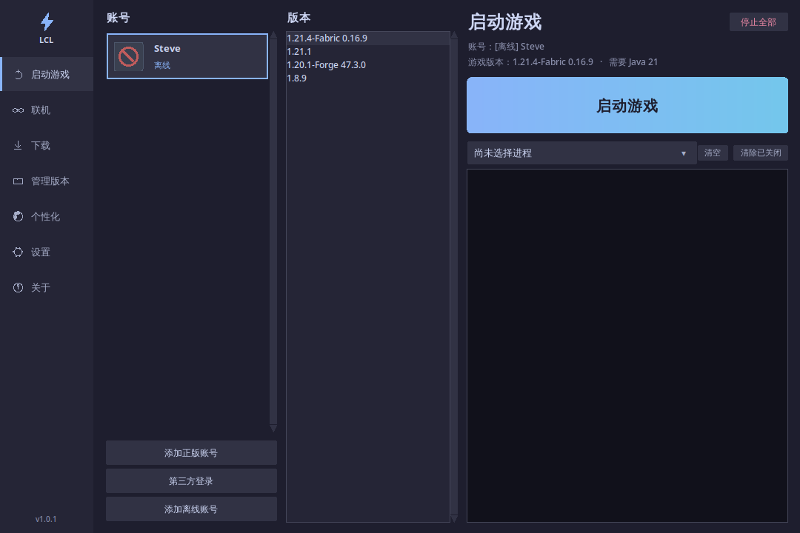

多账号登录
离线、微软正版、第三方认证（authlib-injector）都支持，账号随时切换。
一个简洁、好用的 Minecraft 启动器。
多账号、多版本、多线程高速下载、模组管理，
还有开箱即用的内网穿透联机——一个文件，全部搞定。

不臃肿、不折腾，打开就能用。
离线、微软正版、第三方认证（authlib-injector）都支持，账号随时切换。
原版、Forge、Fabric、Quilt、NeoForge 一键安装，多版本并存互不影响。
游戏库与资源文件多线程下载，实时显示进度，网络不佳也能稳定装完。
支持 .mrpack / .zip 整合包导入，模组启用禁用、依赖检查与一键更新。
陶瓦（Terracotta）房间与恒星 FRP 隧道双方案，和好友联机不再折腾端口。
三套主题、中英文界面、内存与 JVM 参数自定义；启动器可在线自动更新。
深色主题、布局清爽，常用操作一步直达。点击图片查看原图。
当前版本：v1.0.1
发布于 GitHub Releases
不需要安装 Python，EXE 已内置全部依赖。运行 Minecraft 仍需要对应版本的 Java，启动器会检测并在设置页提供 Java 路径配置。
「关于」页的「检查更新」会读取 GitHub 最新 Release，发现新版本后可一键下载并自动替换重启；也可以直接在本页下载最新版覆盖旧文件。
进入「联机」页：陶瓦联机先创建或加入房间，恒星映射登录后选择隧道连接。房主需先在游戏中「对局域网开放」，好友使用启动器显示的地址或房间码加入。